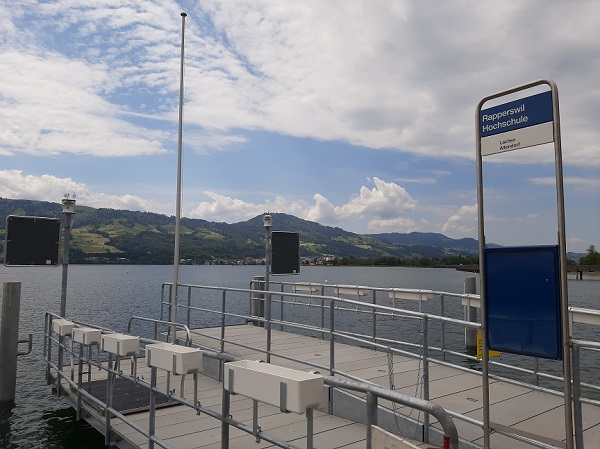
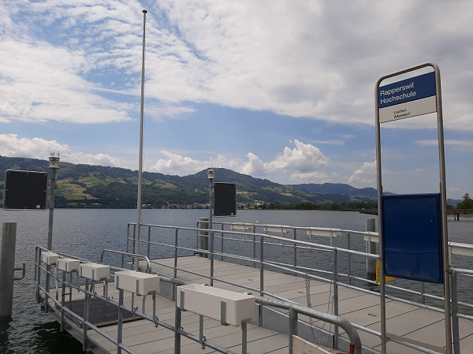

Netzwerkwelt
Infotafel
Willkommen auf dem OST Campus Rapperswil-Jona!
Der Empfang der FOSSGIS-Konferenz 2021 ist im virtuellen Gebäude 1 (gleich rechts)!
Es gibt auf dem Campus Rapperswil der Fachhochschule Ostschweiz (OST) sieben grosse Gebäude, nummeriert mit 1, 2, 3, 4, 5, 6, 8 (also ohne die 7). Das Gebäude 1 ist das grösste. Im Gebäude 4 sind die Mensa und die Aula. Erkunde die weiteren interessanten Orte auf dem "schönsten Campus der Schweiz" 😀!

Parkplatz
Wenn man mit dem Auto, Motorrad oder Velo kommt, gibt es natürlich die Möglichkeit diese zu parken. Entweder in der Campus eigenen Tiefgarage, oder hier, auf diesem Parkplatz.
Infotafel 2
Das ist die zweite Infotafel auf dem Campus Rapperswil der Fachhochschule Ostschweiz (OST).
Der Campus liegt direkt am Zürichsee und hat somit eine schöne Aussicht. Im Sommer lockt das Wasser zu einem erholsamen Bad im See oder der Sonne. Mach doch einen Spaziergang am See entlang und entdecke dabei das Pilgerplätzli, das Floss und vieles mehr.

Treppe zur Tiefgarage
Hat man das Auto in der Tiefgarage abgestellt, führt diese Treppe zum Entwertungsautomaten und zu ihrem Ziel.

Campusgarten
Dies ist der Campus-eigene Garten, in dem die verschiedensten Pflanzen und Blumen erblühen. Eine kleine Sitzgelegenheit lädt zum Verweilen ein.

Spielplatz
Auch Kinder können sich auf dem erweiterten Campusgelände austoben. Dafür sorgt der grosse Spielplatz.
Pilgerplätzli
Für einen kleinen Snack (Glacé/Eis) zwischendurch, ein Fischchnusperli oder ein Picknick ist das Pilgerplätzli optimal.

Informationsglas
Dieses Informationsglas ist eines der 36 Bausteine des Kulturbaukasten Rapperswil-Jona. In Form von Informationsgläsern bieten diese Bausteine vertiefte Hinweise zu Landschaft, Geschichte, Gebäude, Plätze, Einrichtungen, Anlagen, Wasser- und Verkehrsbauten sowie einen Ausblick in die aktuelle Siedlungsentwicklung. In der Summe ergeben die 36 Teilelemente eine über 3500-jährige Kulturgeschichte des Stadtraums Rapperswil-Jona.

Slackline und Street Workout
Wenn man neben dem vielen Lernen mal seine Muskeln spielen lassen will, ist diser Streetworkout-Platz perfekt dafür.

Partyboot
Wer seine private Insel auf dem Zürichsee haben will, kann sich das "Partyboot" - auch bekannt als "Dream Island" - mieten.
Schachfeld
Um die Zeit etwas zu vertreiben oder einen Wettstreit gegen einen Freund zu starten, gibt es ein Schachfeld auf dem erweiterten Campus-Gelände.

Floss
Das Floss ist ein beliebtes Badeplätzchen. Es liegt an der kleinen Bucht dirket gegenüber dem Fäschtinseli und bietet einen einfachen Einstieg ins Wasser. Seit neustem gibt es gleich daneben ein Anlegesteg für das Kursschiff auf dem Obersee. Haltestelle Rapperswil Hochschule.
 

Aussendusche
Die Aussendusche bietet die Möglichkeit, sich nach einem harten Training, einem intensiven Volleyballspiel oder auch nach einer Runde schwimmen im See abzuduschen.

Mensagarten
Wenn man bei schönem Wetter sein Essen lieber draussen essen möchte, bietet sich die Möglichkeit, dieses im Mensagarten zu tun. Ausgerüsstet mit genügend Tischen und Stühlen, sitzt man - auch an sehr heissen Tagen - angenehm im Schatten der Bäume.

Metallplastik Kunstwerk
Nicht zu übersehen mit seiner imposanten Grösse, steht dieses Kunstwerk direkt am See. Man kann es bei einem Spaziergang Richtung Fäschtinseli bestaunen.

Stein Kunstwerk
Auf dem Campus-Gelände - vor dem Gebäude 8 - kann man eines der zahlreichen Kunstwerke auf dem OST-Campus RJ betrachten.
Fäschtinseli
Wenn man mal was feiern möchte oder einfach etwas Distanz zum Studienalltag sucht, eignet sich diese kleine Insel mit Feuerstelle hervorragend. Selten ist sie unbenutzt...

Beachvolleyballfeld
Auf dem Campus-Gelände befindet sich ein Beachvolleyballfeld, auf dem man sich besonders an wärmeren Tagen austoben kann.